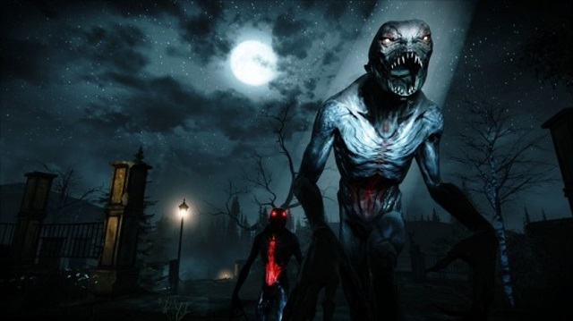
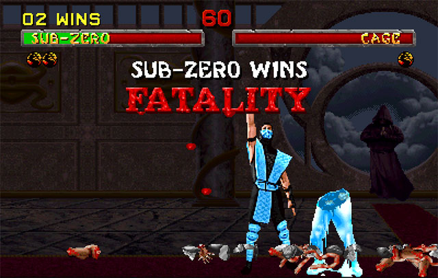

10 trò chơi khiến game thủ chỉ muốn vả lặt mặt hãng game - P.Cuối

Mortal Kombat: Lịch sử tràn đầy mỹ học về bạo lực của FATALITY – P.1
Reddit náo loạn sau tin Levi tái ngộ GAM
Mortal Kombat: Lịch sử tràn đầy mỹ học về bạo lực của FATALITY – P.1
Kể từ ngày được cấp giấy khai sinh, Mortal Kombat và đòn FATALITY của nó chưa có giây phút nào không gắn liền tên tuổi của mình với yếu tố bạo lực. Nếu như Metroid lấy khám phá làm điểm thu hút, Legend of Zelda là sự kết hợp hoàn hảo giữa lối chơi và cốt truyện thì Mortal Kombat xem máu tanh cùng tàn bạo chính là đặc sản để thết đãi người chơi. Trong mớ hỗn tạp và kích thích đầy máu me do trò chơi mang lại tất nhiên luôn có một điểm sáng, nơi tập trung mọi ánh mắt đổ dồn về như khi cô người mẫu vơ-đét bước ra chốt hạ show diễn thời trang vậy. Điểm cực độ thu hút đó không gì khác chính là những pha kết liễu rợn người mà mãi về sau các dân chơi Việt mới học được cách phát âm đúng chuẩn cụm từ Phây-ta-li-ti a.k.aTrước tiên chúng ta cần tìm hiểu về FATALITY, vậy chính xác từ ngữ nghe có vẻ bá khí này là gì? Đó chính là nơi người thắng cuộc sẽ được cung cấp lượng thời gian ít ỏi để hoàn thành tổ hợp phím bấm tương đối phức tạp nếu thành công bạn sẽ thấy đối thủ bị hành quyết theo cách không thể dã man hơn. Vào những ngày này khi công nghệ điện ảnh đã làm mọi thứ trên màn ảnh còn giống thật hơn cả ngoài đời thật thì mấy trò như dùng nón lá sắt xẻ đôi người của Kung Lao hay Sub-Zero thích moi xương sống đối thủ trong Mortal Kombat 11 đã trở nên hơi nhàm. Nhưng thử quay ngược thời gian về quá khứ của 27 năm trước thì đây quả thật là những hình ảnh kinh thiên động địa.
Nói đơn giản thế này, trước năm 1992 game là thứ chỉ dành cho con nít chơi và Ủy ban Đánh giá Phần mềm Giải trí (ESRB) tại Hoa Kỳ là tổ chức chưa bao giờ tồn tại nhưng với sự máu me, bạo lực và đặc biệt là những màn kết liễu FATALITY hết sức tàn nhẫn của Mortal Kombat đã gián tiếp thúc đẩy sự thành lập của tổ chức này. Có lẽ nhiều game thủ sẽ hận chết Mortal Kombat bởi sau năm 1992 họ phải chơi những tựa game đúng theo lứa tuổi của mình và không có bất kỳ cơ hội xé rào nào nhưng xét về mặt tích cực hệ thống phân loại độ tuổi của ESRB đề ra cũng góp phần không nhỏ để thúc đẩy sự phát của ngành công nghiệp game vào thời điểm đó.
Nghe khinh khủng vĩ đại thế nhưng có một sự thật rằng đội ngũ sản xuất Mortal Kombat ban đầu vốn chỉ muốn làm ra một tựa game mà hai bên có thể trao đổi sở học một cách thật thượng võ, kẻ thua cuộc bất quá chỉ bầm dập mặt mũi mà thôi. Tuy nhiên các đối thủ cạnh tranh khác đã tiến triển qua nhanh, quá nguy hiểm và họ buộc phải tạo ra thứ gì đó thật đặc sắc để trò chơi có thể vượt qua những đối thủ đáng ghét.
Khi được hỏi về kẻ cạnh tranh mà nhóm sản xuất không thể ưa được, Ed Boon – người đồng sáng tạo ra thương hiệu Mortal Kombat, dù không nói thẳng nhưng ai cũng có thể hiểu ông ta đang ám chỉ series Street Fighter của Capcom. Vì vậy dù thời điểm ban đầu không muốn thấy máu me và chết chóc nhưng cuối cùng Ed cùng các cộng sự của mình cũng phải nghĩ ra mấy trò hơi hạ lưu để câu khách bởi nhóm đã bị hãng game Nhật Bản bức đến sắp điên và nếu cứ làm mọi thứ như thông lệ, sẽ chẳng có bất cứ cơ hội nào cho Mortal Kombat cả.
Mặc dù các đòn FATALITY đã có cơ hội để trở thành một chiêu tất sát cực mạnh khi đầy năng lượng, theo kiểu mà The King of Fighter hay SF3 sẽ thực hiện về sau này nhưng với tư cách là người đồng sáng tạo Ed Boon lại thuyết phục mọi người biến nó thành mini game thưởng thêm sau khi trận đấu kết thúc. Lý do chủ đạo cho việc này chính là Ed đánh game đối kháng… cực dở thường xuyên bị các đồng sự hạ đo ván trong những lần thi đấu giải trí giữa giờ làm việc. Thanh niên này từng phát biểu rằng rất thích các đòn combo liên hoàn đẹp mắt nhưng lại ghét cảnh bản thân bị người khác đánh cho tối tăm mặt mũi và nhân vật bị choáng đến mức chỉ còn cách đứng im chịu trận.
Không rõ Ed đã thuyết phục như thế nào, chỉ biết rằng cuối cùng sẽ không có thanh năng lượng, không có tuyệt chiêu tất sát chỉ có FATALITY xem như phần thưởng dành cho kẻ đã bón hành đối phương ngập mồm trong suốt trận đấu. Một điều nữa bạn cần biết là ban đầu không phải ai cũng có FATALITY như bây giờ, nhóm thiết kế cho rằng cái trò siêu cấp bạo lực này nên là đặc quyền của gã phù thủy Shang Tsung, boss cuối trong Mortal Kombat 1. Tất nhiên Ed Boon và John Tobias không đời nào chấp nhận phí phạm một ý tưởng như thế chỉ để dành cho trùm cuối. Kết quả là người người có FATALITY, nhà nhà FATALITY tất nhiên không phải FATALITY nào cũng khiến người ta cảm thấy mãn nhãn nhưng ít ra có vẫn hơn là không rồi.
Ngày nay với công nghệ truyền thông vô cùng phát đạt, những chiêu marketing với tên gọi đầy tính hàn lâm học thuật như “gầy dựng tín nhiệm”, “hiệu ứng truyền miệng”, “truyền thông ngược”… đã được rất nhiều cư dân mạng nghe danh và treo bên miệng suốt ngày, bất chấp việc họ chẳng hiểu chính xác điều đó có nghĩa là gì cả. Vào những ngày mùa thu của năm 1992, khi NSX của Mortal Kombat họp nhóm để quyết định phương thức vận hành của trò chơi, Ed Boon đã quyết định họ sẽ ẩn giấu đi cách thức thực hiện các chiêu FATALITY, bất chấp việc đây có thể là con bài quan trọng nhất để hút khách. Theo lý lẽ của Ed nếu FATALITY tự thân có đủ sức hấp dẫn thì chẳng việc gì phải phơi ra bày bán như hàng tôm hàng cá ngoài chợ. Hãy giữ cho nó có đầy đủ sự bí ẩn cần thiết, thứ lúc nào cũng quan trọng trong việc thu hút trí tò mò sau đó cứ để “hiệu ứng truyền miệng” thực hiện pần công việc còn lại.
Tất nhiên là Ed đã thành công với ván bài của mình cũng giống như việc dời FATALITY về cuối mỗi ván đấu vậy nhưng đây là thứ rất khó để các NSX khác mô phỏng lại. Thử nghĩ trong những năm 2019 nếu bạn có đủ can đảm trêu chọc khẩu vị của đám game thủ bằng cách giấu giấu diếm diếm như mèo giấu sh*t thì rất nhanh thôi, chẳng có ma nào thèm quan tâm đến thứ bạn đang giấu nữa. Thời đại công nghệ thông tin mà, thứ gì cũng thiếu chỉ có tin giật gân để thu hút tò mò của khán giả đại chúng là không bao giờ thiếu.
Quay trở lại năm 1992, dù được Ed Boon vỗ ngực cam đoan mọi thứ đâu rồi sẽ vào đấy thế nhưng John Tobias vẫn có phần hơi chột dạ trước quyết định giấu diếm cách thực hiện các FATALITY bởi lo ngại sự kết hợp bất quy tắc giữa các phím bấm và cần gạt cho từng chiêu tất sát riêng của mỗi nhân vật là quá khó để người ta kiên nhẫn tìm hiểu. Giờ thì ai cũng biết hóa ra ổng lo lắng hơi thừa thãi rồi, thậm chí nhiều tay đánh Rồng Đen kỳ cựu còn thuộc lòng tổ hợp FATALITY của toàn bộ các đấu sĩ từng xuất hiện trong các phiên bản khác nhau của trò chơi nữa kìa.
Video Review
Về chúng tôi